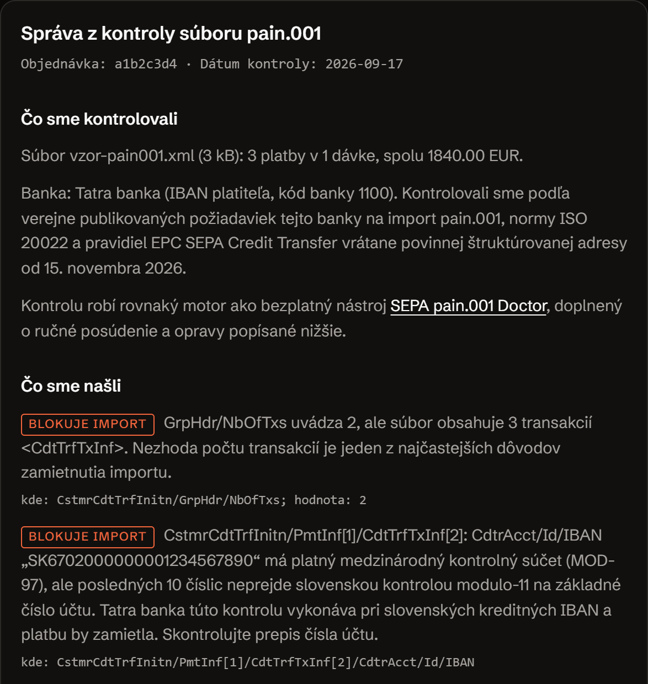

Kontrola SEPA súboruNástroje pre prácuARLing s. r. o., Bratislava
Pošlete súbor. Do 24 hodín viete, čo neprejde.
Prejdeme váš súbor pain.001 a do 24 hodín pošleme opravený súbor aj písomný záver: ktoré platby po 15. novembri 2026 neprejdú, v ktorom riadku to je a čo presne napísať dodávateľovi vášho účtovného programu.
Objednať kontrolu za 149 € Ako to prebehne
- Zadarmo
- Tú istú kontrolu si spustíte sami v prehliadači na SEPA pain.001 Doctor, bez účtu.
- Platí sa
- 149 € jednorazovo za jednu kontrolu. Doklad vystaví Stripe.
- Hranice
- Kontrola je formátová, nie daňové ani právne poradenstvo. O prijatí súboru rozhoduje banka.
- Vaše údaje
- Súbor použijeme len na túto kontrolu a u spracovateľa Cloudflare sa po 30 dňoch zmaže sám.

Cena a objednávka.
jednorazovo, za jednu kontrolu. Doklad vystaví Stripe.
Potvrdenie o platbe vystaví Stripe. Ak potrebujete doklad s údajmi vašej firmy, napíšte po platbe na andrej@arling.sk a pošleme ho do jedného pracovného dňa.
Objednať kontroluAk výsledok nepríde do 24 hodín alebo sa súbor nedá opraviť, vrátime celých 149 €.
- Písomný záver v slovenčine, nie výpis z programu.
- Presné znenie otázky pre dodávateľa vášho účtovného softvéru.
- Odpoveď na doplňujúce otázky e-mailom.
Toto dostanete: opravený pain.001 a takúto správu.
Toto dostanete: do 24 hodín od nahratia opravený súbor pain.001 a písomný záver v slovenčine, a ak to do 24 hodín nepríde alebo sa súbor nedá opraviť, vrátime celých 149 €.
Správa z kontroly súboru pain.001
Objednávka: a1b2c3d4 · Dátum kontroly: 2026-09-17
Čo sme kontrolovali
- Súbor vzor-pain001.xml (3 kB): 3 platby v 1 dávke, spolu 1840.00 EUR.
- Banka: Tatra banka (IBAN platiteľa, kód banky 1100). Kontrolovali sme podľa verejne publikovaných požiadaviek tejto banky na import pain.001, normy ISO 20022 a pravidiel EPC SEPA Credit Transfer vrátane povinnej štruktúrovanej adresy od 15. novembra 2026.
- Kontrolu robí rovnaký motor ako bezplatný nástroj SEPA pain.001 Doctor, doplnený o ručné posúdenie a opravy popísané nižšie.
Čo sme našli
- blokuje importGrpHdr/NbOfTxs uvádza 2, ale súbor obsahuje 3 transakcií <CdtTrfTxInf>. Nezhoda počtu transakcií je jeden z najčastejších dôvodov zamietnutia importu.kde: CstmrCdtTrfInitn/GrpHdr/NbOfTxs; hodnota: 2
- blokuje importCstmrCdtTrfInitn/PmtInf[1]/CdtTrfTxInf[2]: CdtrAcct/Id/IBAN „SK6702000000001234567890“ má platný medzinárodný kontrolný súčet (MOD-97), ale posledných 10 číslic neprejde slovenskou kontrolou modulo-11 na základné číslo účtu. Tatra banka túto kontrolu vykonáva pri slovenských kreditných IBAN a platbu by zamietla. Skontrolujte prepis čísla účtu.kde: CstmrCdtTrfInitn/PmtInf[1]/CdtTrfTxInf[2]/CdtrAcct/Id/IBAN
- treba opraviťAdresa platiteľa je zapísaná ako voľný text v <AdrLine>. Od 15. novembra 2026 banka takýto súbor odmietne. Adresa musí mať aspoň mesto a kód krajiny vo vlastných poliach; dovtedy prejde, potom nie.kde: Document/CstmrCdtTrfInitn/PmtInf/Dbtr/PstlAdr; hodnota: Vymyslena 12 | 851 01 Bratislava
- treba opraviťAdresa príjemcu má štruktúrované polia, ale chýba v nej mesto (TwnNm). To je od 15. novembra 2026 povinné minimum pre každú adresu v SEPA platbe.kde: Document/CstmrCdtTrfInitn/PmtInf/CdtTrfTxInf/Cdtr/PstlAdr; hodnota: Ctry
- drobnosťPmtInf[1]/DbtrAcct/Id/IBAN obsahuje medzery. IBAN v XML sa zapisuje bez medzier.kde: CstmrCdtTrfInitn/PmtInf[1]/DbtrAcct/Id/IBAN; hodnota: SK24 1100 0000 0026 1234 5678
Čo sme opravili automaticky
- 2 adresy rozdelené z voľného textu (AdrLine) na ulicu, číslo, PSČ, mesto a kód krajiny (StrtNm, BldgNb, PstCd, TwnNm, Ctry).
- 1 názov krajiny prepísaný na dvojpísmenový kód ISO (napríklad Slovensko na SK).
- 1 IBAN zbavený medzier.
- NbOfTxs v GrpHdr: 2 prepísané na 3.
- NbOfTxs v PmtInf 1: 2 prepísané na 3.
Adresa platiteľa pred opravou a po nej
pred
<PstlAdr> <AdrLine>Vymyslena 12</AdrLine> <AdrLine>851 01 Bratislava</AdrLine> </PstlAdr>
po
<PstlAdr> <StrtNm>Vymyslena</StrtNm> <BldgNb>12</BldgNb> <PstCd>851 01</PstCd> <TwnNm>Bratislava</TwnNm> <Ctry>SK</Ctry> </PstlAdr>
Čo sme nechali človeku
- Cdtr: P. O. Box 214 | 040 01 Kosice (poštový priečinok namiesto ulice). Poštový priečinok nie je ulica s číslom, preto adresu nerozdeľujeme odhadom a rozhoduje o nej človek.
- Po opravách ostávajú 4 nálezy. Správa pokračuje hotovým textom pre dodávateľa účtovného softvéru, aby ďalší export vyšiel správne.
Vzorový súbor je vymyslený: mená, IBAN, adresy aj sumy sú vybraté tak, aby v ňom neboli údaje žiadnej firmy. Správu vyššie nikto neprepisoval, je to výstup nášho nástroja nad týmto súborom, spustený 17. 9. 2026. O prijatí súboru rozhoduje banka; opravený súbor nie je zárukou, že ho banka prijme.
Tri kroky, žiadna registrácia.
-
Zaplatíte 149 €
Kartou cez Stripe. Doklad dostanete od nich, netreba nič vypĺňať ani zakladať účet.
-
Nahráte súbor na stránke
Hneď po zaplatení vás Stripe pošle na stránku, kde súbor pretiahnete alebo vyberiete. Stačí jeden hromadný príkaz, ktorý ste naposledy posielali do banky. Ak máte viac exportov, nahrajte ich všetky.
-
Do 24 hodín máte opravený súbor a záver
Pošleme opravený
pain.001, ktorý môžete poslať do banky, a napíšeme, ktoré platby po termíne neprešli, v ktorom riadku to bolo a čo presne poslať dodávateľovi vášho programu, aby ďalší export vyšiel správne.
Lebo nie každý sa chce hrať s XML.
Bezplatná kontrola na arling.sk/sepa-pain001-doctor robí presne to isté a nikdy sa spoplatňovať nebude. Ak si viete otvoriť exportovaný súbor a vložiť ho do políčka, použite ju a neplaťte nič.
Toto je pre toho, kto spravuje platby za viacero klientov, nechce sa v tom prehrabávať a potrebuje jednu vec, ktorú vie poslať ďalej: písomný záver a hotovú otázku pre dodávateľa softvéru. Rozdiel nie je v kontrole, ale v tom, kto ju urobí a v akej podobe ju dostanete.
Súbor je len na kontrolu a potom ho mažeme.
Váš pain.001 použijeme len na tú kontrolu, ktorú ste si zaplatili. Na nič iné, nikam ho neposielame ďalej a nepoužívame ho na trénovanie žiadnych modelov.
Z našej strany k nemu pristupuje len ARLing s. r. o. Uložený je u nášho spracovateľa Cloudflare s lehotou 30 dní: po jej uplynutí sa zmaže sám, bez ohľadu na to, či na to niekto myslel.
Je to tak zámerne: v hromadnom príkaze sú IBAN, sumy a adresy vašich dodávateľov. Také údaje nemajú dôvod ležať nikde inde než u vás a vo vašej banke.
Čo sa ľudia pýtajú skôr, než zaplatia.
Čo sa stane s mojím súborom?
Prejdeme ho, opravíme, napíšeme záver a po 30 dňoch sa sám zmaže. Neposielame ho nikam ďalej a nepoužívame ho na nič iné. Ak chcete, pred nahratím z neho môžete vymazať mená a nechať len IBAN, sumy a adresy: na kontrolu termínu to stačí.
A čo keď v súbore nič nenájdete?
Aj to je odpoveď a aj tú dostanete písomne. Ak váš export žiadne adresy neobsahuje, po termíne prejde presne ako dnes a nemusíte robiť nič. Peniaze v takom prípade nevraciame, lebo prácu sme urobili a istotu máte, ale povieme vám to rovno a nebudeme vymýšľať problém.
Opravíte mi ten súbor?
Áno. Dostanete opravený súbor, ktorý môžete poslať do banky. Sám o sebe by ale nestačil, lebo ďalší mesiac vyexportujete rovnaký. Preto je súčasťou záveru aj presné znenie otázky pre dodávateľa vášho účtovného programu: opravený súbor rieši tento mesiac, otázka pre dodávateľa ten ďalší.
Ste banka alebo daňový poradca?
Ani jedno. ARLing je softvérová firma. Kontrola je formátová, teda porovnáva váš súbor s tým, čo majú banky a pravidlá SEPA zverejnené. Nie je to daňové ani právne poradenstvo a čistý výsledok nezaručuje, že banka platbu prijme.
Prečo 149 € a nie mesačné predplatné?
Lebo tento problém sa rieši raz. Keď váš program po oprave začne písať adresu správne, kontrolu už nepotrebujete. Mesačné predplatné dáva zmysel pri nástrojoch, ktoré používate stále, tie nájdete v balíku Bankové nástroje.
Môžem odstúpiť od zmluvy a dostať peniaze späť?
Ak nakupujete ako spotrebiteľ, máte 14 dní na odstúpenie od zmluvy bez udania dôvodu. Kontrola je ale služba, ktorá sa začína hneď: na stránke na nahratie zaškrtnete, že súhlasíte so začatím poskytovania služby pred uplynutím lehoty na odstúpenie, a nahratím súboru sa služba začne. Po dodaní opraveného súboru a správy právo na odstúpenie od zmluvy zaniká. Ak opravený súbor a správu nedodáme do 24 hodín od nahratia, alebo ak súbor nevieme opraviť, vrátime celú sumu 149 €. Napíšte na andrej@arling.sk. Podrobnosti sú v podmienkach.
Ďalšie nástroje a poznámky.
E-faktúru podľa EN 16931 skontrolujete alebo vytvoríte na stránke E-faktúra.
Bezplatnú kontrolu súboru pain.001 ponúka SEPA pain.001 Doctor.
Čo presne sa 15. novembra 2026 mení, vysvetľuje poznámka Štruktúrovaná adresa v SEPA platbe.
Kto to vydáva a ako to prebieha.
- Vydavateľ
- ARLing s. r. o., Ivanská cesta 32E, 821 04 Bratislava, Slovensko. IČO 56583486, IČ DPH SK2122352100.
- Kto to robí
- Kontrolu robí ten istý motor ako bezplatný SEPA pain.001 Doctor, doplnený o ručné posúdenie. Kód nástroja je verejný na github.com/AndryRoby.
- Platba a doručenie
- Platbu spracuje Stripe, ktorý je voči vám predajcom a vystaví doklad. Hneď po platbe vás pošle na stránku na nahratie súboru; výsledok posielame e-mailom do 24 hodín od nahratia.
- Ukážka a podmienky
- Celá vzorová správa aj pôvodný a opravený súbor sú vyššie na stiahnutie. Ak výsledok nepríde do 24 hodín alebo sa súbor nedá opraviť, vrátime celých 149 €.
- Odpoveď
- Na andrej@arling.sk odpovedáme do 24 hodín, v pracovné dni aj skôr.
- Čo to nie je
- Nie sme banka ani daňový poradca. Čistý výsledok kontroly nie je zárukou, že banka platbu prijme.